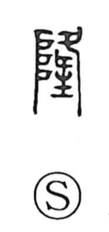

隆

Uncategorized
Kun: | On: ryu
prosperous ・ abundant ・ high ・ great
Explanation
In its earliest form, 隆 combines 阜, the earthen mound, with a sign of a foot pointing downward (夂) set before the shrine altar (示). The vertical element evokes the gods’ ladder by which deities ascend and descend; 夂 shows the act of coming down, and 示 identifies the shrine where the descent is received. Altogether it depicts the divine spirit descending to the shrine along the gods’ ladder, and from this image the character came to express the flourishing, abundant, elevated might conferred by the gods—later generalized to meanings such as prosperous, abundant, high, and great.